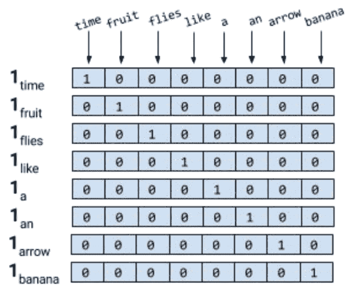

0.简介
资料来源：
PyTorch自然语言处理（Natural Language Processing with PyTorch）
主要内容:自然语言处理NLP和深度学习，公式部分没有详细的分析。
示例代码:原书中有Spacy模块，但我偏向于NLTK模块来实现
章节：
1.基础介绍
2.传统NLP快速回顾
3.神经网络基础组建
4.自然语言处理前馈网络Feed-Forward Networks
5.Embedding Words and Types
6.自然语言处理Sequence Modeling
7.自然语言处理Sequence Modeling
8.用于自然语言处理的高级Sequence Modeling
9.经典，前沿和后续步骤
1.基础介绍
1.1 有监督学习

如上图所示:
Data:输入数据集中包含下面两个
Observation:观察对象，用x来表示
Targets:与观察对象相对应的标签，用y来表示
Model:数学表达式或者是一个函数，它接收x观察值，并预测目标的标签值。
Parameters:参数化模型中的权重，使用符号为w
Prediction:预测，是模型在给定观察值的情况下，所猜测的目标的标签值，我们通常在其后面加上hat
Loss Function:
比较预测值和观察对象之间的差距，返回一个标量。损失值越低，模型对目标的预测效果越好，用L来表示损失函数。
结合上面的概念，用数学来表示:
一个数据集 D={X[i],y[i]}，i=1..n，有n个例子。
给定这个数据集，我们想要学习一个权值w参数化的函数(模型)f。换言之，我们对f的结构做一个假设，给定这个结构，权值w的学习值将充分表征模型。
对于一个给定的输入X,模型预测y_hat作为目标: y_hat = f(X;W)
在监督学习中，对于训练例子，我们知道观察的真正目标标签y。这个实例的损失将为 L(y, y_hat) 。然后，监督学习就变成了一个寻找最优参数/权值w的过程，从而使所有n个例子的累积损失最小化。
1.2 (随机)梯度下降法及反向传播
利用(随机)梯度下降法进行训练，监督学习的目标是为给定的数据集选择参数值，使损失函数最小化。换句话说，这等价于在方程中求最小值。
我们知道梯度下降法是一种常见的求最小值的方法。回忆一下，在传统的梯度下降法中，我们对参数的一些初值进行猜测，并迭代更新这些参数，直到目标函数(损失函数)的计算值低于可接受阈值(即收敛准则)。
对于大型数据集，由于内存限制，在整个数据集上实现传统的梯度下降通常是不可能的，而且由于计算开销，速度非常慢。相反，通常采用一种近似的梯度下降称为随机梯度下降(SGD)。在随机情况下，数据点或数据点的子集是随机选择的，并计算该子集的梯度。当使用单个数据点时，这种方法称为纯SGD，当使用(多个)数据点的子集时，我们将其称为小型批处理SGD。
通常情况下，“纯”和“小型批处理”这两个词在根据上下文变得清晰时就会被删除。在实际应用中，很少使用纯SGD，因为它会由于有噪声的更新而导致非常慢的收敛。一般SGD算法有不同的变体，都是为了更快的收敛。在后面的章节中，我们将探讨这些变体中的一些，以及如何使用渐变来更新参数。这种迭代更新参数的过程称为反向传播。反向传播的每个步骤(又名epoch)由向前传递和向后传递组成。向前传递用参数的当前值计算输入并计算损失函数。反向传递使用损失梯度更新参数。
1.3 观察对象和标签的编码

如上图所示，我们需要用数字来表示观察值(文本)，以便与机器学习算法一起使用。
表示文本的一种简单的方法就是用数字向量来表示。我们使用其中一个简单的方法:
1.3.1 One-Hot表示方式
one-hot表示从一个0向量开始，如果单词出现在句子或者文档中，则将向量中相应的条目设置为1,例如下面的两句话:
‘’’bash
Time flies like an arrow
Fruit flies like a banana
‘’’
对句子进行标记，忽略标点符号，然后将所有单词用小写字母来表示，就会得到一个大小为8的词汇表{time, fruit, flies, like, a, an, arrow, banana}。所以，我们可以用一个8维的one-hot向量来表示每一个单词，我们使用l[w]来表示单词w的one-hot表示。
对于短语、句子或者文档，其one-hot表示仅仅是它的组成词语的one-hot表示的逻辑或。
例如，短语’like a banana’的one-hot表示就是一个3×8的矩阵。
通常，会看到折叠形式的或二进制编码，其文本由和词汇表相同的向量表示，用0或1表示缺失或者存在。‘like a banana’的二进制编码是:[0,0,0,1,1,0,0,1]。备注，折叠one-hot是一个向量中有多个1的one-hot

注意，可能对flies的两种意思弄混了，但是语言中充满了这种歧义，但是我们可以通过简单的假设来构建方案。使其学习特定意义的表示，但这个要之后再说。
本文章通常使用one-hot表示，但是在NLP中还有其他的表示方法。
1.3.2 TF表示
句子的TF表示仅仅是句子中词的one-hot总和。
使用前面的one-hot编码，“Fruit flies like time flies a fruit”这句话具有以下TF表示:[1,2,2,1,1,1,0,0]。
每一个数字是句子中出现相应单词的次数
1.3.3 TF-IDF表示
一个文件中可能会出现相同的词语很多次。
例如专利文件中，里面claim,system,method等单词会经常出现很多次。
TF表示方式对更频繁的词进行加权，但是，上面的词语不会增加我们对文章内容的理解，相反，如果类似tetrafluoroethylene这样的词语出现的频率比较低，但是很可能表明了专利文件的性质，所以希望给予它更加大的权重，反文档频率是一种启发式的算法，可以精确地做到这一点。
TF-IDF会降低常见词语的权重，而增加不常见词语的权重。
词频(TF)=某个词在文章中出现的次数 / 文章中的总词数
逆文档频率(IDF)=log(语料库的文档总数 / (包含该词的文档数+1))
TF-IDF=TF(w)*IDF(w)
假如所有文档中都有这个词语，那么数值为0,当一个词语很少出现，可能只出现在一个文档中，那么IDF就是最大值。
在深度学习中，很少看到使用像TF-IDF这样的启发式表示对输入进行编码，因为目标是学习一种表示。
通常，我们从一个使用整数索引的one-hot编码和一个特殊的“embedding lookup”层开始构建神经网络的输入。
1.3.4 目标编码
目标变量的性质取决与所要解决的NLP任务。例如，在机器翻译、摘要和回答问题的情况下，目标是文本，并且使用前面描述的one-hot编码方法进行编码。
许多NLP任务实际上是使用分类标签，其中模型必须预测一组固定标签中的一个。对于这种编码的常见方法是对每一个标签使用唯一的索引。当输出标签的数量太大时，这种简单的表示可能会出现问题。这方面的一个例子是语言建模问题，在这个问题中，任务是预测下一个单词，给定过去看到的单词。标签空间是一种语言的全部词汇，它可以很容易地增长到几十万，包括特殊字符、名称等等。
一些NLP问题涉及从给定文本中预测一个数值。例如，给定一篇英语文章，我们可能需要分配一个数字评分或可读性评分。给定一个餐馆评论片段，我们可能需要预测直到小数点后第一位的星级。给定用户的推文，我们可能需要预测用户的年龄群。有几种方法可以对数字目标进行编码，但是将目标简单地绑定到分类“容器”中(例如，“0-18”、“19-25”、“25-30”等等)，并将其视为有序分类问题是一种合理的方法。 这一部分，超过了我这个文章的范围，在这种情况下，目标编码会显著影响性能。
1.4 计算图
将上面的模型对输入进行转换，从而获得预测。损失函数提供反馈信号来调整模型的参数。利用计算图数据结构可以方便地实现该数据流。从技术上讲，计算图是对数学表达式建模的抽象。在深度学习中，计算图的实现(Theano、TensorFlow和PyTorch)进行了额外的记录，以实现在监督学习中训练期间获取参数梯度所需要的自动微分。我们将在PyTorch基础知识中探讨。推理或者预测就是见打的表达式求值，计算图上的正向流。
考虑表达式:y=wx+b
将其写成两个子表达式:z=wx和y=z+b,我们使用一个有向无环图DAG来表示原始的表达式。
之后，我们将看到如何用PyTorch以直观的方式创建计算图形，以及它如何让我们计算梯度，而无需考虑任何记录(bookkeeping)
PyTorch基础：
PyTorch实现了一种“tape-based automatic differentiation”方法，允许我们动态定义和执行计算图形。这对于调试和用最少的努力构建复杂的模型非常有帮助。
动态 VS 静态计算图 像Theano、Caffe和TensorFlow这样的静态框架需要首先声明、编译和执行计算图。虽然这会导致非常高效的实现(在生产和移动设置中非常有用)，但在研究和开发过程中可能会变得非常麻烦。像Chainer、DyNet和PyTorch这样的现代框架实现了动态计算图，从而支持更灵活的命令式开发风格，而不需要在每次执行之前编译模型。动态计算图在建模NLP任务时特别有用，每个输入可能导致不同的图结构。
PyTorch是一个优化的张量操作库，它提供了一系列用于深度学习的包。这个库的核心是张量，它是一个包含一些多维数据的数学对象。0阶张量就是一个数字，或者标量。一阶张量(一阶张量)是一个数字数组，或者说是一个向量。类似地，二阶张量是一个向量数组，或者说是一个矩阵。因此，张量可以推广为标量的n维数组，
2.传统NLP快速回顾
自然语言处理(NLP)和计算语言学(CL)是人类语言计算研究的两个领域。NLP旨在开发解决涉及语言的实际问题的方法，如信息提取、自动语音识别、机器翻译、情绪分析、问答和总结。另一方面，CL使用计算方法来理解人类语言的特性。我们如何理解语言?我们如何产生语言?我们如何学习语言?语言之间有什么关系?
在文献中，我们经常看到方法和研究人员的交叉，从CL到NLP，反之亦然。来自语言学习的课程内容可以用来告知NLP中的先验，统计和机器学习的方法可以用来回答CL想要回答的问题。事实上，这些问题中的一些已经扩展到它们自己的学科，如音位学、形态学、句法学、语义学和语用学。
在本书中，我们只关注NLP，但是我们经常根据需要从CL中借鉴思想。在我们将自己完全归属于NLP的神经网络方法之前，有必要回顾一下一些传统的NLP概念和方法。这就是本章的目标。
2.1 语料库Corpora、令牌Tokens、Types
所有的NLP方法，无论是经典的还是现代的，都以文本数据集开始，也称为语料库(复数:corpora)。语料库通常有原始文本(ASCII或UTF-8格式)和与文本相关的任何元数据。原始文本是字符(字节)序列，但是大多数时候将字符分组成连续的称为令牌(Tokens)的连续单元是有用的。在英语中，令牌(Tokens)对应由空格字符或标点分隔的单词和数字序列。
元数据(Metadata)可以是与文本相关联的任何辅助信息，例如标识符，标签和时间戳。 在机器学习术语中，文本及其元数据称为实例(instance)或数据点。 下面是语料库的一组实例，也称为数据集。 鉴于本书重点关注机器学习，我们可以自由地交换术语语料库和数据集。
将文本分为令牌Tokens的过程称为令牌化tokenization。
首先，以下面的推特作为例子:
1 | Snow White and Seven Degress #MakeAMovieCold @midnight |
上面的#MakeMovieCold标签应该是一个令牌还是4个令牌，许多论文没有太多的关注，许多令牌化决策往往是任意的，但是，这些决策在实践中对准确性的影响比公认的大很多，通常被认为是预处理的繁琐工作，大多数开源NLP包为令牌化提供了合理的支持，举了NLTK和Spacy的例子，这是两个用于文本处理的常用包。
1 | Input[1]: |
类型是语料库中的唯一的令牌，语料库中所有类型的集合就是它的词汇表或者词典。词可以分为内容词和停止词。像冠词和介词这样的限定词主要是为了达到语法的目的，就像填充物来支撑着内容词一样。
2.2 Unigrams,Bigrams,Trigrams,…,Ngrams
ngram是文本中出现的固定长度n的连续令牌序列。bigram有两个令牌，unigram只有一个令牌。从文本生成ngram非常简单，但是nltk提供了简单方法。
1 | def n_grams(text, n): |
对于子词(subword)信息本身携带有用信息的某些情况，可能需要生成字符ngram。例如，“methanol”中的后缀“-ol”表示它是一种醇;如果您的任务涉及到对有机化合物名称进行分类，那么您可以看到ngram捕获的子单词(subword)信息是如何有用的。在这种情况下，您可以重用相同的代码，除了将每个字符ngram视为令牌。(这里的subword应该是值类似前缀后缀这种完整单词中的一部分)
2.3 Categorizing Sentences and Documents 对文档或句子进行归类
对文档或句子进行归类可能是NLP最早的应用之一，我们在之前的TF和TF-IDF表示中，对于较长的文本块，例如文档或者句子进行分类非常有用。主题标签的分配、评论情绪的检测、垃圾邮件的过滤，语言识别和邮件分类等问题可以定义为受监督的文档分类问题。
还有一种半监督的方法，只用了一个小的部分数据，但是这个方法暂时不考虑。
2.4 对字进行分类 POS 标签
我们可以将标记的概念从文档扩展到单词或者标记。分类词的一个常见的方法是词性标注。
1 | import nltk |
输出:
1 | [('Whether', 'IN'), ('you', 'PRP'), ("'re", 'VBP'), ('new', 'JJ'), ('to', 'TO'), ('programming', 'VBG'), ('or', 'CC'), ('an', 'DT'), ('experienced', 'JJ'), ('developer', 'NN'), (',', ','), ('it', 'PRP'), ("'s", 'VBZ'), ('easy', 'JJ'), ('to', 'TO'), ('learn', 'VB'), ('and', 'CC'), ('use', 'VB'), ('Python', 'NNP'), ('.', '.')] |
词性的表达方式:
1 | CC 并列连词 NNS 名词复数 UH 感叹词 |
2.5 分块Chunking和浅解析Shallow parsing
浅解析的目的是，推导出由名词、动词、形容词等语法原子组成的高阶的单位，如果没有训练浅解析模型的数据，可以在词性标记上编写正则表达式来近似浅解析。幸运的是，对于英语和最广泛使用的语言来说，这样的数据和预先训练的模型是存在的。
1 |
2.6 句子树
浅层解析识别短语单位，而识别它们之间关系的任务称为解析(parsing)。例如，用图来表示句子。
解析树(Parse tree)表示句子中不同的语法单元在层次上是如何相关的。另一种可能更有用的显示关系的方法是使用依赖项解析(dependency parsing)，如下图表示:
2.7 单词含义
单词有意义，而且通常不止一个。一个词的不同含义称为它的意义(senses)。WordNet是一个长期运行的词汇资源项目，它来自普林斯顿大学，旨在对所有英语单词(嗯，大部分)的含义以及其他词汇关系进行分类。
上面的WordNet项目已经花费了数十年，即使在现在的方法，例如神经网络和深度学习方法的背景下使用现有的语言资源。
词的意义也可以从上下文中归纳出来。从文本中自动发现词义实际上是半监督学习在自然语言处理中的第一个应用。尽管这部分没有详细学习，但资源:Jurasky and Martin(2014)，第17章，Manning and Schutze(1999)，第7章
参考文献:
Manning, Christopher D., and Hinrich Schütze. (1999). Foundations of statistical natural language processing. MIT press.
Bird, Steven, Ewan Klein, and Edward Loper. (2009). Natural language processing with Python: analyzing text with the natural language toolkit. O’Reilly Media.
Smith, Noah A. (2011). “Linguistic structure prediction.” Synthesis lectures on human language technologies.
Jurafsky, Dan, and James H. Martin. (2014). Speech and language processing. Vol. 3. London: Pearson.
Russell, Stuart J., and Peter Norvig. (2016). Artificial intelligence: a modern approach. Malaysia: Pearson Education Limited.
Zheng, Alice, and Casari, Amanda. (2018). Feature Engineering for Machine Learning: Principles and Techniques for Data Scientists. O’Reilly Media, Inc.
3.神经网络基础组建
这部分的内容可以直接参考我的博客上神经网络与深度学习的基础知识(Emir-Liu.github.io)。
在这个例子中，我们使用Yelp数据集，它将评论与它们的情感标签(正面或负面)配对。此外，我们还描述了一些数据集操作步骤，这些步骤用于清理数据集并将其划分为训练、验证和测试集。
在理解数据集之后，您将看到定义三个辅助类的模式，这三个类在本书中反复出现，用于将文本数据转换为向量化的形式:词汇表(the Vocabulary)、向量化器(Vectorizer)和PyTorch的DataLoader。
词汇表协调我们在“观察和目标编码”中讨论的整数到令牌(token)映射。我们使用一个词汇表将文本标记(text tokens)映射到整数，并将类标签映射到整数。
接下来，矢量化器(vectorizer)封装词汇表，并负责接收字符串数据，如审阅文本，并将其转换为将在训练例程中使用的数字向量。
我们使用最后一个辅助类，PyTorch的DataLoader，将单个向量化数据点分组并整理成minibatches。
3.1 The Yelp Review Dataset
2015年，Yelp举办了一场竞赛，要求参与者根据点评预测一家餐厅的评级。
同年，Zhang, Zhao，和Lecun(2015)将1星和2星评级转换为“消极”情绪类，将3星和4星评级转换为“积极”情绪类，从而简化了数据集。该数据集分为56万个训练样本和3.8万个测试样本。在这个数据集部分的其余部分中，我们将描述最小化清理数据并导出最终数据集的过程。然后，我们概述了利用PyTorch的数据集类的实现。
在这个例子中，我们使用了简化的Yelp数据集，但是有两个细微的区别。第一个区别是我们使用数据集的“轻量级”版本，它是通过选择10%的训练样本作为完整数据集而派生出来的。这有两个结果:首先，使用一个小数据集可以使训练测试循环快速，因此我们可以快速地进行实验。其次，它生成的模型精度低于使用所有数据。这种低精度通常不是主要问题，因为您可以使用从较小数据集子集中获得的知识对整个数据集进行重新训练。在训练深度学习模型时，这是一个非常有用的技巧，因为在许多情况下，训练数据的数量是巨大的。
从这个较小的子集中，我们将数据集分成三个分区:一个用于训练，一个用于验证，一个用于测试。虽然原始数据集只有两个部分，但是有一个验证集是很重要的。在机器学习中，您经常在数据集的训练部分上训练模型，并且需要一个held-out部分来评估模型的性能。如果模型决策基于held-out部分，那么模型现在不可避免地偏向于更好地执行held-out部分。因为度量增量进度是至关重要的，所以这个问题的解决方案是使用第三个部分，它尽可能少地用于评估。
综上所述，您应该使用数据集的训练部分来派生模型参数，使用数据集的验证部分在超参数之间进行选择(进行建模决策)，使用数据集的测试分区进行最终评估和报告。